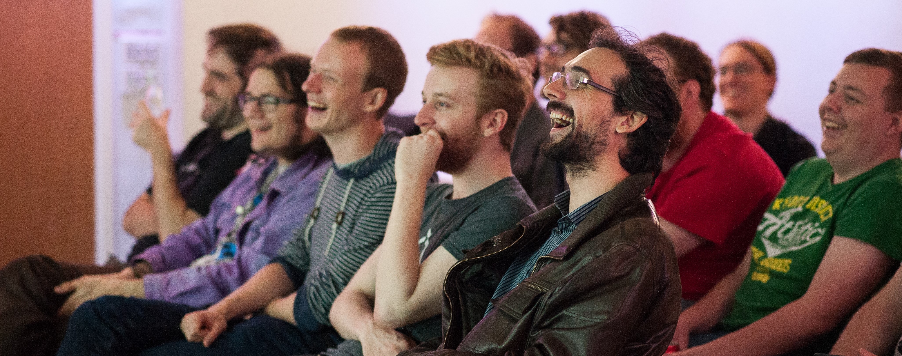

What's up in Nott's?
Nottingham's excellent tech scene and offerings.
Nottingham is a great place to be in tech, and not only because of the brilliant businesses and projects (see the Tech Nation report from last year). It has a fantastic community and culture, as well as events and experiences to enjoy.
Here is a list of a few things that make Nottingham a great tech city in my opinion.
Meetups
There are currently over 30 tech meetups arranged in Nottingham. A list of the event and times can be found at Nottingham.Digital.

Hackathons
There are a few hackathons around the midlands - including Hack Manchester and Hack The Midlands. Nottingham now hosts a number of different hackathons, each with their own uniqueness.
-
Notts GovJam is happening on the 6th - 7th of June. The challenges of this hack is to find innovative solutions to problems faced by the public sector. As far as I’m aware, this is the first GovJam to be hosted in Nottingham. There are some fantastic people involved so it’s sure to be a fantastic event.
-
HackNotts is a hackathon for high school, undergraduate or postgraduate students, or graduates who are less than a year out of university. Hackathons are a great place and environment to learn. If you aren’t eligible to take part in the hack - that’s okay! Be a volunteer! You can soak up the fun of the event, help keep it running smoothly and meet some fantastic people making great projects.
-
Global Game Jam has already happened this year, in January. The focus of this event is for teams to make games with advice for some lead game developers. A theme is given out at the beginning of the event and sponsors make various tools available throughout the 48 hours. It’s not a competition, just a chance to have fun making something cool.
-
Hack24 has also already happened this year. I’ve written about it previously in my blog post Hack24 ‘17, The Greatest Place On Earth, and as you can probably tell from that title alone it is very close to my heart. Sponsors set challenges for teams to take part in and compete to win challenges. The focus of the event isn’t the competition though. There is fantastic food, games, and general merriment.
I could write an entire post on all the great things about hackathons and the benefits of them. One day I might, but you should definitely try to experience one for yourself. You don’t need to be a developer! Just arrive wanting to have fun!

Hackspaces
Nottinghack is a fantastic hackspace. With the membership being based on a ‘Pay What You Think Is Right’ system. There is a lot of equipment available including 3D printers, laser cutters, wool and more.
Alongside the equipment (with training on offer) there is a great community that attend Nottinghack.
You can attend just to hang out with like minded people, make something or attend a course and learn something new!
The next workshop available from the date of this post is the Ardunio Workshops on Saturday 26th May.
Podcasts
If you want to get involved in the tech scene, but aren’t too sure about the face-to-face aspect yet - how about checking out some of the local podcasts. There are a few about - but here are three you can start with.
-
Cynical Developer is probably the most technical of the three. Hosted by James Studdart - topics cover desktop, web and mobile development, mainly around the .Net Stack but often looking into other software and frameworks.
-
Twine Radio - is hosted by Jonathan Relf. He talks with local meetup organisers and inflencencers about their events, what has happened and what is up ahead.
-
BookClubPod hosted on TwineRadio this is a brand new podcast. Jonathan Relf, Karl Bagci, Tom Jepson and I talk about some of the tech and non-fiction books we have read, what we think of them and how they influence our work. We plan to have guests in the future. It is a very relaxed podcast, just friends getting together and talking about their reads.
Universities
NVA
Games
Code Club
Code Club is a remarkable organisation that runs free coding clubs for young people aged 9 - 13 years. It is completely volunteer lead and there are currently ~ 49 venues in Nottingham who have run a Code Club or intend to run one soon.
There are 6 venues are looking for a volunteer to help them get started so now is a great time to get involved as a volunteer. If you are considering starting a club in a venue near you there is also a FREE online FutureLearn course called “Prepare to run a Code Club”.
For more info email : eastmidlands@codeclub.org.uk
Workshops and other fun stuff
There are many places in Nottingham offering workshops and experiences to take part in. Some are technical - some are not. Here are a couple of places to check out.
-
NearNow at Broadaway is a ‘studio for arts, design and innovation’. They hst workshops, events, galleries as well as providing fellowships for assisting making creative ideas become a reality.
-
Contemporary might seem a strange choice for a semi-tech focused list. A lot of great events and workshops are hosted here. There are DJ sets for gaming music, workshops to learn how to code or design… in fact it is so varied it is really hard to make a list. Check it out and find out what interesting things you can find.

National Videogame Arcade
There is a lot on offer at The National Videogame Arcade. Its well known for ALL THE GAMES but there are also workshops, events, corporate hire, parties and more. There are festival, events, and courses. They sometimes host designers, authors and programmers to come and talk about the cool work they have been involved in. There are are more interactive events and competitions to. There are more traditional learning experiences as well - PixelHeads, for example, provides courses for young people that are interested in learning how to code.
One such event that is returning this year (2018) is the Game City Festival. It launched in 2006, and celebrates independent videogames and celebrating videogame culture.
Games
A bit of a tangent away from tech related things - there are some great places to play games as well. Go to Dicecup and Ludorati to play boardgames or D’n’D. Both have very knowledgeable staff, refreshments and a WHOLE LOT of games. If you prefer something more digital - ALT might be more up your street. Again you can play alone, with friends or attend one of their many events.
Community
Why am I excited about all the above? What does it matter that there are all these fantastic things and why should you care?
What I love most is the side effect of attending, learning, enjoying - which is the community that is built off the back of it. Through meeting people, having these experiences with them, you have something to talk about. You can find out about similar interests. This spreads and grows into this amazing ecosystem of people supporting each other, learning from each other and becoming friends.
I have made some of my closest friends through the events and community in Nottingham. It helped me believe I could enjoy tech and make it as a developer back when I hadn’t even started. It has provided support when it was needed. It has made me want to contribute myself by creating a meetup, mentoring others and speaking.
Please enjoy all the things that are “up in Notts” - and let me know about the things you find!